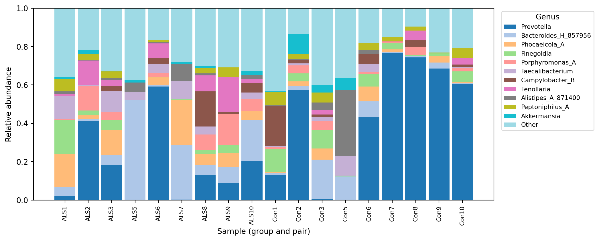

qiime taxa barplot renders interactively.
Running the q2-deeptaxa plugin to import a model, classify representative sequences, and train
Objective. Use the q2-deeptaxa plugin to classify 16S rRNA representative sequences inside a QIIME 2 workflow, and to inspect and train DeepTaxa models as QIIME 2 artifacts.
Prerequisites. A QIIME 2 amplicon distribution (2024.10 or a compatible release) with deeptaxa-rrna installed, and a DeepTaxa checkpoint that matches your amplicon region.
Inputs. Representative sequences as FeatureData[Sequence] and a DeepTaxa checkpoint. Outputs. A FeatureData[Taxonomy] artifact, plus optional model-summary and taxa-bar-plot visualizations. Runtime. Classifying a few hundred sequences takes well under a minute on CPU; training is a heavy job for which a GPU is recommended.
Last validated July 2026.
QIIME 2 is a widely used platform for microbiome analysis that tracks every artifact and its provenance. DeepTaxa ships a QIIME 2 plugin, q2-deeptaxa, so the same hybrid CNN-BERT classifier used from the command line in the prediction tutorial can be run as a step in a QIIME 2 pipeline. The plugin exposes three actions: classify (assign taxonomy to representative sequences), describe (summarize a trained model), and fit (train a new model from reference data).
This tutorial follows the classification path end to end using the amplicon sequence variants from the case study: 276 representative sequences from a 16S V4 dataset. Because these reads are V4, the example uses the V4 checkpoint; for full-length or V3-V4 data, substitute the matching checkpoint.
The commands below are shown as they are run in a terminal with an activated QIIME 2 environment. They are not executed when this page is built, so the code blocks are reference listings rather than live cells.
The plugin is part of the deeptaxa-rrna package, so there is nothing separate to install beyond DeepTaxa itself. In an activated QIIME 2 environment, install DeepTaxa from Bioconda and refresh the plugin cache so QIIME 2 discovers the new commands:
The last command lists the three actions, which confirms that the plugin is registered:
Commands:
classify Classify reads with a DeepTaxa model
describe Describe a DeepTaxa model
fit Train a DeepTaxa modelA trained DeepTaxa model is a QIIME 2 artifact of semantic type DeepTaxaModel, so once imported it carries provenance like any other artifact. Download a published checkpoint that matches your amplicon region from the model repository:
| Input data | Recommended checkpoint |
|---|---|
| Full-length 16S (~1,500 bp) | deeptaxa-full-length-v2.pt |
| V3-V4 (341F/805R) | deeptaxa-v3v4-v2.pt |
| V4 (515F/806R) | deeptaxa-v4-v2.pt |
Using the wrong region’s checkpoint lowers species accuracy, so match the checkpoint to how the reads were sequenced. These reads are V4, so this example uses the V4 checkpoint, then imports it once:
Imported deeptaxa-v4-v2.pt as DeepTaxaModelFormat to deeptaxa-model.qzaThe result, deeptaxa-model.qza, is reused by every later classify or describe call.
A DeepTaxaModel wraps a PyTorch checkpoint, which is loaded with pickle. Loading a checkpoint runs whatever code it was saved with, so only import model files from a source you trust. The same caution applies to any PyTorch model, or to a scikit-learn classifier used with classify-sklearn.
The classifier takes representative sequences as FeatureData[Sequence]. In a typical workflow these come from DADA2 or Deblur (for example rep-seqs.qza). Here the sequences are the 276 amplicon sequence variants from the case study, provided as a FASTA file, which import directly:
Imported asv_seqs.fasta as DNASequencesDirectoryFormat to asv-seqs.qzaWith the model and the sequences imported, a single command assigns taxonomy:
Saved FeatureData[Taxonomy] to: taxonomy.qzaThe output, taxonomy.qza, is an ordinary FeatureData[Taxonomy] with one lineage per input feature and a joint confidence for each. DeepTaxa predicts all seven ranks in a single forward pass, and the reported confidence is conservative: it is the minimum of the per-rank probabilities along the lineage.
Like classify-sklearn, the action trims each lineage at a confidence of 0.7 by default, so only the confident portion of the assignment is reported. The threshold is adjustable, and passing disable keeps the full seven-rank lineage regardless of confidence:
Saved FeatureData[Taxonomy] to: taxonomy-full.qzaThe confidence here is not the same knob as the command-line --confidence-threshold from the prediction tutorial, and the two use different defaults on purpose. In QIIME 2, confidence (default 0.7) actually trims the lineage, dropping every rank from the first low-confidence one downward, so the result matches how classify-sklearn reports taxonomy. The command-line --confidence-threshold (default 0.95) leaves the full lineage in place and only flags each rank as confident or not, which suits the richer per-sequence output of the standalone tool. Pick the threshold that fits the workflow you are in rather than carrying one default over to the other.
Other parameters control batch size (--p-batch-size), the number of data-loading workers (--p-num-workers), and the random seed (--p-seed); inference is deterministic, so a fixed seed reproduces the same assignments.
Turn the taxonomy artifact into a viewable table with the standard QIIME 2 metadata visualizer:
Saved Visualization to: taxonomy.qzvOpening taxonomy.qzv at view.qiime2.org shows one row per feature with its Taxon string and Confidence column. The same table can be written to a plain TSV with qiime tools export, which is convenient for scripting or a quick look:
Exported taxonomy.qza as TSVTaxonomyDirectoryFormat to directory exported-taxonomyThe first rows of the exported taxonomy.tsv for these ASVs are (confidence rounded):
Feature ID Taxon Confidence
ASV1 d__Bacteria; ...; f__Bacteroidaceae; g__Prevotella; s__Prevotella corporis 0.9999
ASV2 d__Bacteria; ...; f__Bacteroidaceae; g__Prevotella; s__Prevotella bivia 0.9999
ASV3 d__Bacteria; ...; f__Peptoniphilaceae; g__Finegoldia; s__Finegoldia magna_H 0.9989
ASV4 d__Bacteria; ...; f__Bacteroidaceae; g__Prevotella; s__Prevotella disiens 1.0000Because the input is the same set of V4 amplicon sequence variants classified in the case study, the genus-level assignments match the taxonomy analyzed there. The dominance of Prevotella among the leading features is consistent with the case study, where Prevotella is the most abundant genus in the control microbiomes.
The describe action renders a summary of a model checkpoint without running any inference, which is useful for confirming that a DeepTaxaModel artifact holds the configuration you expect:
Saved Visualization to: model-summary.qzvOpening model-summary.qzv at view.qiime2.org shows the model card. For the V4 checkpoint it reports:
Model details
model_type hybridcnnbert
tokenizer zhihan1996/DNABERT-2-117M
total_parameters 76,365,205
epochs trained 10
max_length 512 tokens
Dataset
total_sequences 274,509 (219,607 training / 54,902 validation)
Taxonomic levels (number of classes per rank)
domain 2 · phylum 129 · class 349 · order 997 · family 2,250 · genus 7,287 · species 16,909Because the output is an ordinary FeatureData[Taxonomy], it feeds into the rest of QIIME 2 exactly like the output of any other classifier. A common next step is a taxonomy bar plot, which needs a feature table and sample metadata:
Opening taxa-bar-plots.qzv at view.qiime2.org gives an interactive stacked bar chart of composition at any rank. For the case-study samples, the genus-level composition from this DeepTaxa classification is shown below (drawn here from the committed count and taxonomy tables so it renders in this page; qiime taxa barplot produces an interactive version of the same information).

qiime taxa barplot renders interactively.
The fit action trains a new DeepTaxa model from reference sequences and a matching reference taxonomy, producing a DeepTaxaModel artifact. Training is GPU-intensive, so a CUDA device is strongly recommended; the mechanics and the interpretation of the run are covered in the training tutorial.
Saved DeepTaxaModel to: deeptaxa-model.qzafit trains on the seven standard ranks (domain through species). Each reference lineage is mapped onto those ranks by prefix (d__ or k__ for domain, then p__, c__, o__, f__, g__, s__), and any rank missing from a lineage is recorded as Unclassified. The architecture and loss options mirror the command-line trainer: --p-model-type selects cnn, bert, or hybridcnnbert (the published default), and --p-loss-type selects cross_entropy (the default) or focal.
The q2-deeptaxa plugin makes the DeepTaxa classifier a first-class QIIME 2 citizen. A checkpoint imported once as a DeepTaxaModel classifies representative sequences into a FeatureData[Taxonomy] with a single classify call, and the result flows into the rest of a QIIME 2 workflow like any other taxonomy. The describe and fit actions cover inspecting an existing model and training a new one.
For the command-line equivalent of the classification path, see the prediction tutorial; for a full training walkthrough, see the training tutorial.